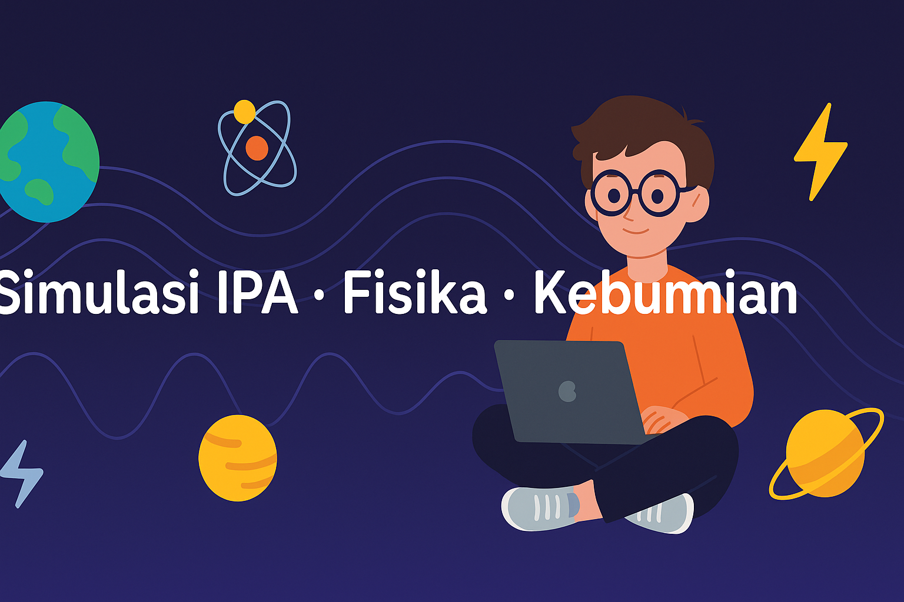

Tata Surya Interaktif
Amati orbit delapan planet mengelilingi Matahari, lengkap dengan informasi jarak dan periode revolusi yang disederhanakan.
Buka SimulasiLaboratorium Sains Digital Versi Lokal
SimLab.id membantu guru menjelaskan konsep abstrak dengan simulasi interaktif yang ringan, mudah dipakai, dan bisa diakses langsung dari browser.
Visual Tata Surya versi SimLab.id — simulasi interaktifnya bisa kamu coba di bawah. 😉
Beberapa simulasi yang dirancang untuk membantu guru dan siswa memahami konsep IPA dengan cara visual.
Amati orbit delapan planet mengelilingi Matahari, lengkap dengan informasi jarak dan periode revolusi yang disederhanakan.
Buka Simulasi
Simulasi gerak lurus menggunakan objek di lintasan untuk membantu memahami hubungan jarak, waktu, kecepatan, dan percepatan.
Buka Simulasi
Bangun rangkaian seri-paralel dasar dan lihat bagaimana perubahan resistor memengaruhi arus dan tegangan pada lampu.
Buka SimulasiSimulasi di SimLab.id dikelompokkan berdasarkan tema, sehingga guru dan siswa bisa langsung memilih sesuai mata pelajaran.
Bagian ini memberikan gambaran singkat bagaimana guru dapat memanfaatkan simulasi SimLab.id di kelas sebagai pendukung penjelasan materi dan diskusi.
Guru menjalankan satu simulasi di depan kelas, sementara siswa fokus mengamati dan menjawab pertanyaan panduan dari guru.
Jika lab atau alat terbatas, simulasi dapat menjadi pengganti praktikum sederhana sehingga semua siswa tetap melihat fenomena secara visual.
Siswa bisa mengakses simulasi di rumah (jika ada gawai dan internet) dan mengisi lembar kerja yang disiapkan guru.
Antarmuka bersih, tombol terbatas, dan bahasa Indonesia sehingga mudah dijelaskan dalam waktu singkat.
Simulasi tidak sekadar animasi, tetapi bisa dihentikan, diulang, dan diubah parameternya untuk memancing pertanyaan siswa.
Setiap simulasi dapat dipasangkan dengan lembar kerja siswa (LKS) atau tugas refleksi yang disusun guru.